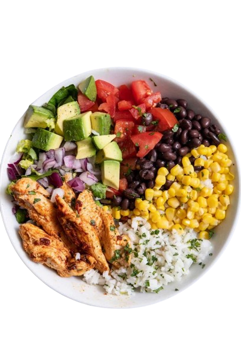
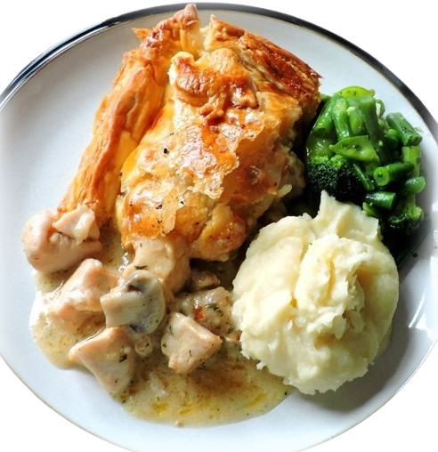

For a quick fish and chips fix, start by slicing potatoes into thick wedges, then fry them until golden and crispy. Meanwhile, dip fish fillets in a batter made of flour, baking powder, salt, and water, then fry them until golden and cooked through. Drain excess oil on paper towels and serve hot with tartar sauce or malt vinegar. Enjoy your delicious homemade fish and chips!
Savor the savory goodness of our Chicken Burrito Protein Bowl! Packed with flavor and nutrition, this dish is a delicious twist on the classic burrito. Start with tender grilled chicken seasoned to perfection, then layer it atop a bed of fluffy cilantro-lime rice. Add a colorful array of toppings, including black beans, corn salsa, diced tomatoes, creamy avocado, and zesty lime wedges. Finish with a dollop of Greek yogurt or a sprinkle of cheese for that extra kick of protein. Whether you're fueling up post-workout or simply craving a hearty meal, our Chicken Burrito Protein Bowl is sure to satisfy your taste buds and leave you feeling energized. Enjoy the goodness in every bite!
Start by sautéing sliced mushrooms in butter until they're golden brown, then set them aside. In the same pan, cook seasoned chicken breasts until they're browned and cooked through. Remove the chicken from the pan and set it aside. Next, in the same pan, make a creamy sauce by adding minced garlic, chicken broth, heavy cream, and thyme. Let the sauce simmer until it thickens slightly. Finally, add the cooked mushrooms and chicken back to the pan, and let everything simmer together for a few minutes to meld the flavors. Serve hot with your favorite side dish, like rice or mashed potatoes, and enjoy your delicious chicken and mushroom dish!